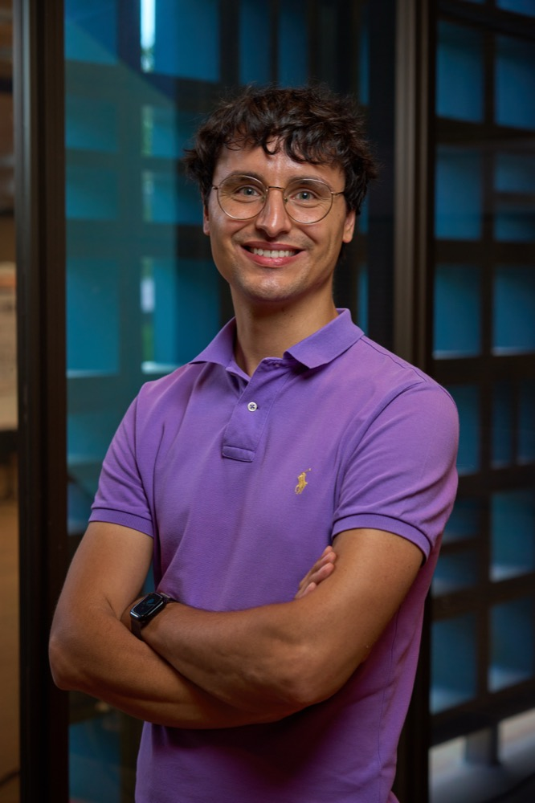

A collaborative, cross-disciplinary group where chemists learn to think across scales, from atoms to algorithms, grounded in a culture of curiosity, respect, and reproducibility.

Dmitry combines physical chemistry, electron diffraction, materials science, and machine learning to reveal how atomic structure gives rise to chemical properties. His goal is to transform diffraction from a descriptive tool into an intelligent, quantitative science of structure.
Before UT Austin, he was a Staff Scientist at Caltech with Prof. Hosea Nelson and a Visiting Scientist at UCLA with Prof. Jose Rodriguez, where he developed the Reciprocal Eyes (REyes) autonomous microED platform. He completed his postdoctoral work at USC with Prof. Valery Fokin and earned his PhD at the Zelinsky Institute of Organic Chemistry with Prof. Valentine Ananikov.
The group launches in January 2027. We are building our founding team now and welcome people excited to build autonomous tools for structural chemistry.
Apply to the UT Austin Department of Chemistry and mention your interest in the Eremin Group. Feel free to email first with a short note about what you want to work on.
Email a CV and a brief statement of interests. Backgrounds in crystallography, mass spectrometry, machine learning, or synthesis are all welcome.
UT Austin undergraduates interested in research at the interface of chemistry and computation are encouraged to get in touch.